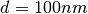
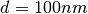
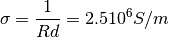

pylayers.antprop.slab.SlabDB.add¶
- SlabDB.add(name, lmatname, lthick, color='black')[source]¶
add a slab in dB
Parameters: name : string
lmat : list of mat name
lthick : list ot float
list of layer thickness in meters
Warning
thickness is in cm in .slab
Examples
Example from the paper: “Reflection ant Transmission Properties of Building Materials in D-Band for Modeling Future mm-Wave Communication Systems ” Martin Jacob and Thomas Kurner and Robert Geise and Radoslaw Piesiewicz EUCAP 2010
from pylayers.antprop.slab import * import numpy as np import matplotlib.pylab as plt sl = SlabDB('matDB.ini','slabDB.ini') sl.mat.add('ConcreteJc',cval=3.5,alpha_cmm1=1.9,fGHz=120,typ='THz') sl.mat.add('GlassJc',cval=2.55,alpha_cmm1=2.4,fGHz=120,typ='THz') sl.add('ConcreteJc',['ConcreteJc'],[0.049]) sl.add('DoubleGlass',['GlassJc','AIR','GlassJc'],[ 0.0029,0.0102,0.0029]) theta = np.linspace(20,60,100)*np.pi/180 sl['ConcreteJc'].ev(120,theta) sl['ConcreteJc'].plotwrt(var='a',typ=['l20']) fig = plt.figure() sl['DoubleGlass'].ev(120,theta) sl['DoubleGlass'].plotwrt(var='a',typ=['l20']) freq = np.linspace(110,135,50) fig = plt.figure() sl['DoubleGlass'].ev(freq,theta) sl['DoubleGlass'].pcolor(dB=True)
Exemple from paper “[Kiani2007] Glass Characterization for Designing Frequency Selective Surfaces to Improve Transmission through Energy saving glass windows Kiani 2007” The surface impedance is
 , the thicknesss is 
, the thicknesss is Pilkington Spectrum OnLine applet
Design of Energy Saving Windows with high Transmission at 900MHz and 1800 MHz

from pylayers.antprop.slab import * import numpy as np import matplotlib.pylab as plt sl = SlabDB('matDB.ini','slabDB.ini') sl.mat.add('CoatingPilkington',cval=1,sigma=2.5e6,typ='epsr') sl.mat.add('GlassPilkington',cval = 6.9,sigma = 5e-4,typ='epsr') sl.add('Optitherm382',['CoatingPilkington', 'GlassPilkington'],[100e-9,0.00382]) fGHz = np.linspace(0.9,2.2,50) theta = np.linspace(0,np.pi/2,100) sl['Optitherm382'].ev(fGHz,theta) sl['Optitherm382'].pcolor(dB=True)